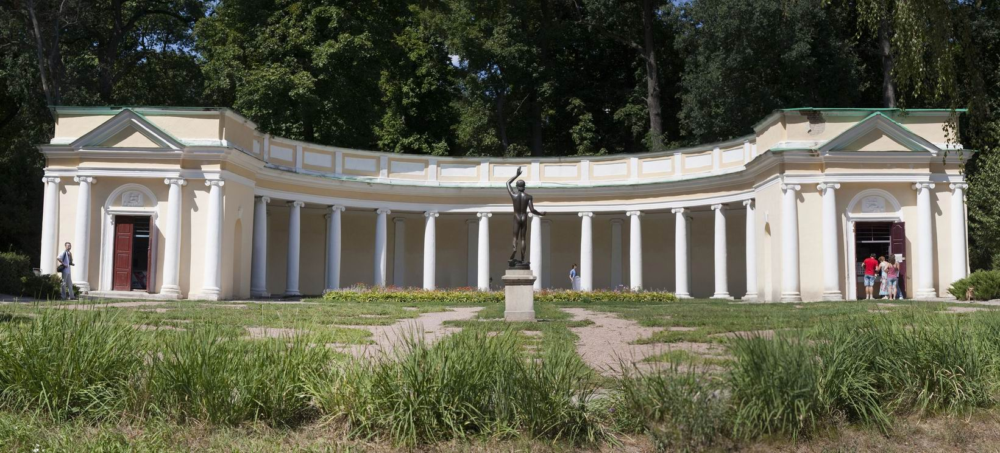
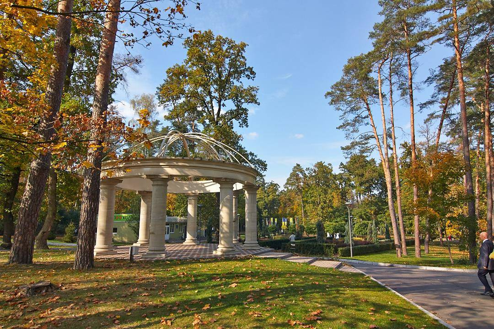
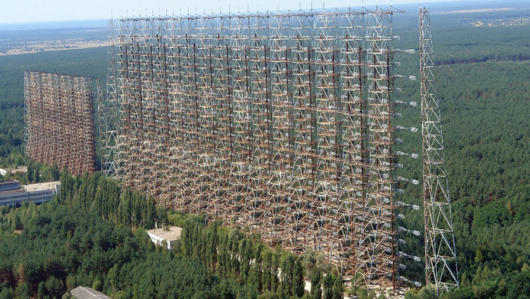

Туристичні місця київщини
1.Колонада "Луна"

Колонада побудована у вигляді давньогрецьких амфітеатрів. Напівциркулярна галерея замикається двома об’ємними ризалитами.
Ефектний вигляд колонади доповнюється її унікальними акустичними властивостями. Слово, пошепки сказане в одному кінці споруди, без спотворень, передається в інший кінець, не зважаючи на відстань у 34 метри.
2.Міський парк в Бучі

Міський парк в Бучі площею 42 гектара був відкритий у 2011 році. На його спорудження витратили понад $1 млн. Знаходиться в 20 кілометрах від Києва, сюди зручно поїхати у вихідний день. У парку розташовані скейт-парк, міні-зоопарк, дитячий майданчик, мотузковий парк, є кілька кафе. Що цікаво, по всьому парку є також безкоштовний Wi-Fi.
3.Планерна гора

Недалеко від Києва є гора, з якої відкриваються мальовничі краєвиди. Вона знаходиться позаду Мануфактури, біля Обухівської траси. Приїжджати сюди варто ввечері, кращі види будуть на заході сонця.
4.Радіолокаційна станція «Дуга», Чорнобиль

Станція для системи раннього виявлення пусків міжконтинентальних балістичних ракет.
До середини 1980-х років це був абсолютно секретний об'єкт, який дозволяв відстежувати цілі на дистанції від 900 до 3000 кілометрів на приполярній області.